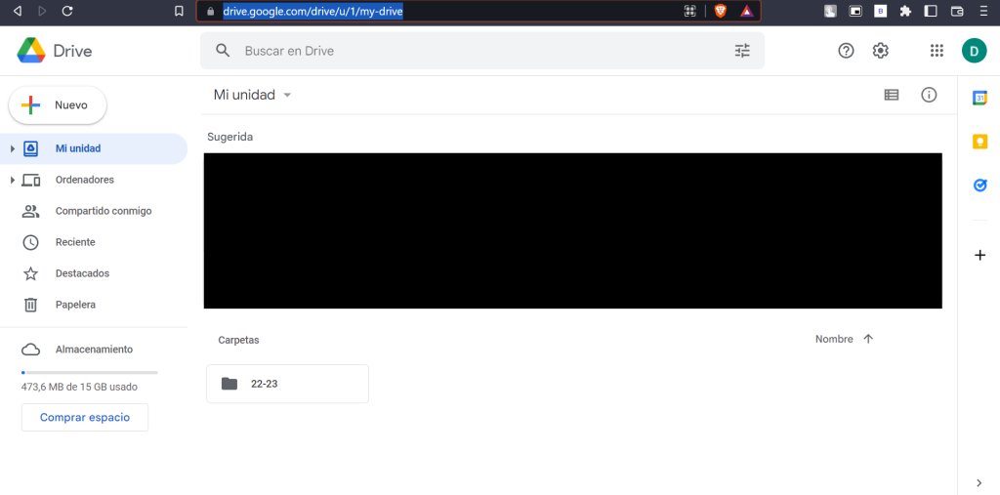

1. Para comenzar, debemos acceder a Google
Drive desde
cualquier navegador.

2. Una vez ahí elegimos el documento en cuestión que queremos compartir, en este
caso es una foto que acabo de subir. Tras elegir dicho documento, hacemos click
derecho y elegimos la opción de «Compartir».
3. Tras haber hecho eso veremos la siguiente pestaña la cual nos pedirá los datos
de la persona con la cual queremos compartir dicho documento. Además, veremos
otra opciones como «Copiar enlace» el cual es útil por si no te sabes el correo
de la otra persona o simplemente quieres que sea más portable, podemos avisar a
la persona a la cual le damos los permisos de que ha recibido dicho acceso,
poner un comentario y seleccionar los permisos que explicaré en el siguiente
apartado un poco más detallado.
¿Cuáles son los tipos de permisos que existen? Al compartir un
archivo desde Google Drive nos da tres opciones para que el destinatario tenga
dichos permisos. En cuanto al primero, «Lector«, como su propio
nombre indica, tan solo permite a Manuel Gómez Páez en mi caso leer dicho
archivo, en relación al segundo, «Comentador» permitirá añadir
comentarios a un documento hecho en Word, por ejemplo, cuando quiera. Por
último, el cual podemos ver con un tick azul junto a él es el de
«Editor» y permitirá a Manuel leer, comentar y modificar dicho
documento.
¿Si quiero compartir una hoja de cálculo desde la página de la suite de
Google cómo lo hago? Para comenzar, dirígete a la página de Hojas de cálculo de Google
desde la cual elegiremos qué
documento queremos compartir con alguien, una vez ahí veremos cómo justo debajo
del título de la hoja de cálculo hay un apartado llamado «Archivo», investigando
un poco podremos ver «Compartir» el cual nos dejará subirlo a la web o
compartirlo con un correo electrónico o compartir el enlace.
¿Puedo subir una carpeta completa desde mi ordenador? Sí y,
además, es tan sencillo como buscarla en tu ordenador y arrastrarla hacia el
navegador.
Por último, seleccionamos la nueva carpeta a la cual la queremos mover el archivo
o directorio o creamos una nueva mediante el icono de abajo a la izquierda.
¿Si movemos un archivo conserva los permisos? En este caso
reutilizaré el archivo anterior el cual compartí con Manuel Gómez Páez, tan solo
lo voy a mover a la carpeta que cree antes, llamada «david», y podemos comprobar
que sí, los permisos no los pierde por lo que aunque esté en otra ruta, Manuel
podrá seguir viendo mi archivo aún.